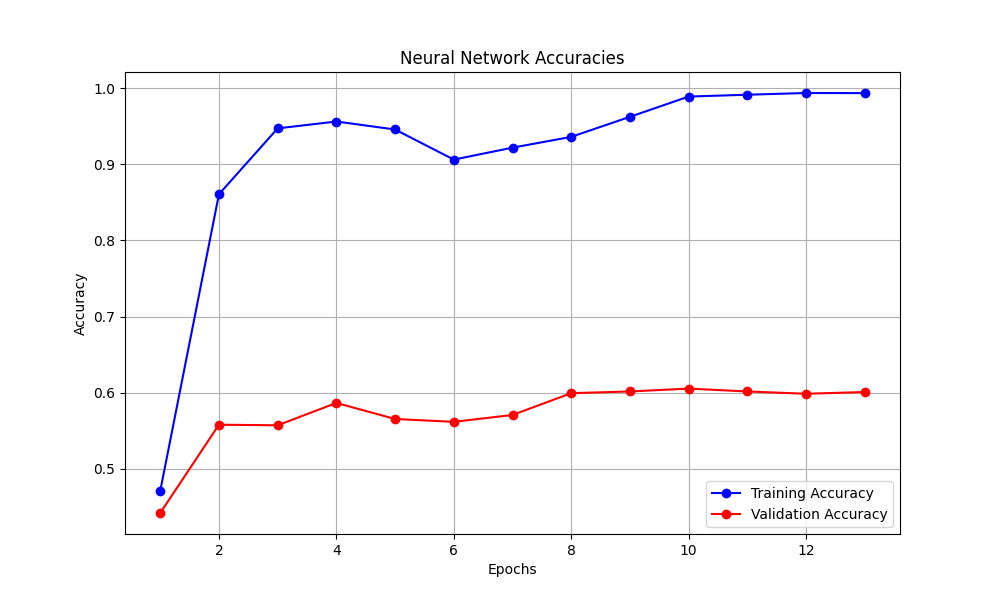
Results
Bag of Words
In the exploration of various models on a training set employing a bag of words representation, distinct performance disparities were observed. Firstly, utilising a feed-forward neural network, an impressive training accuracy of 0.99 was attained. However, its validation accuracy registered at 0.6, hinting at potential overfitting. An analysis of the test set predictions, as depicted by the confusion matrix, demonstrated that the correct classes were predominantly predicted for the corresponding sentences. Notably, the test set metrics were: precision at 0.595, recall at 0.569, and the f1 score also at 0.569.
The employment of support vector machines (SVM) with the bag of words approach, post-tuning, yielded training and validation accuracies of 0.989 and 0.533 respectively, with the test accuracy being 0.55. The precision, recall, and f1 scores for this model stood at 0.551, 0.55, and 0.547 respectively.
Lastly, when Naive Bayes was paired with the bag of words method, post-optimisation, it achieved training and validation accuracies of 0.89 and 0.592 respectively. This model appeared less prone to overfitting compared to its counterparts. For the test set, precision was measured at 0.624, recall at 0.615, and interestingly, the test accuracy was noted to be 0.616, slightly higher than the recall.
Neural network
| Training Accuracy | Validation Accuracy |
|---|---|
| 0.994 | 0.601 |
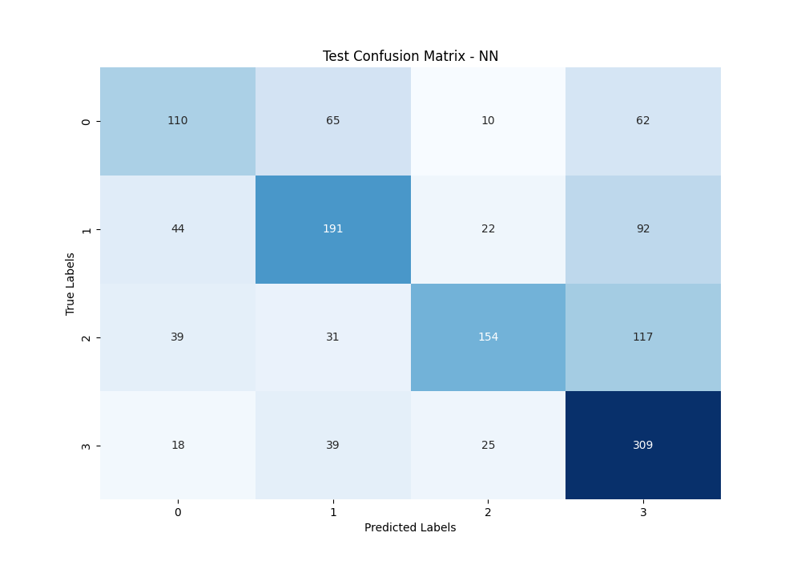
| Metric | Value |
|---|---|
| Precision | 0.595 |
| Recall | 0.575 |
| F1 Score | 0.569 |
Support Vector Machine
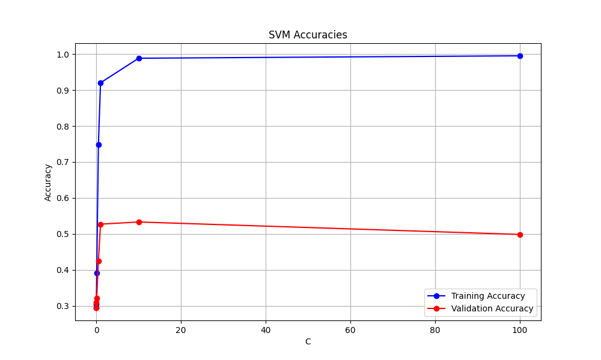
| Hyperparameter Value | Training Accuracy | Validation Accuracy | Test Accuracy |
|---|---|---|---|
| 10.000 | 0.989 | 0.533 | 0.550 |
| C | Training Accuracy | Validation Accuracy | Test Accuracy |
|---|---|---|---|
| 0.001 | 0.295 | 0.294 | 0.294 |
| 0.010 | 0.304 | 0.309 | 0.306 |
| 0.100 | 0.391 | 0.322 | 0.325 |
| 0.500 | 0.748 | 0.425 | 0.445 |
| 1.000 | 0.920 | 0.527 | 0.566 |
| 10.000 | 0.989 | 0.533 | 0.550 |
| 100.000 | 0.995 | 0.498 | 0.517 |
A table of hyperparameter tuning results for the SVM model trained on the Bag of Words representation, with the best hyperparameters highlighted above.
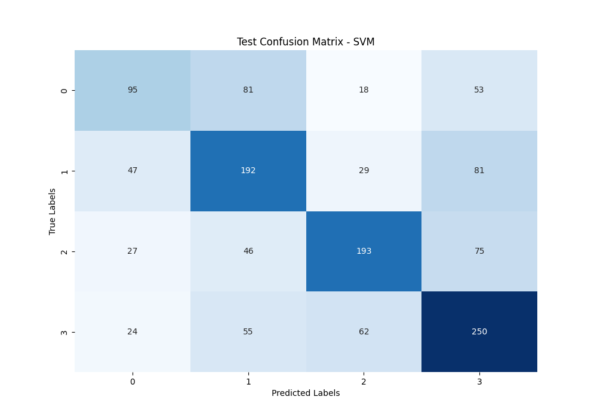
| Metric | Value |
|---|---|
| Precision | 0.551 |
| Recall | 0.55 |
| F1 Score | 0.547 |
Naive Bayes
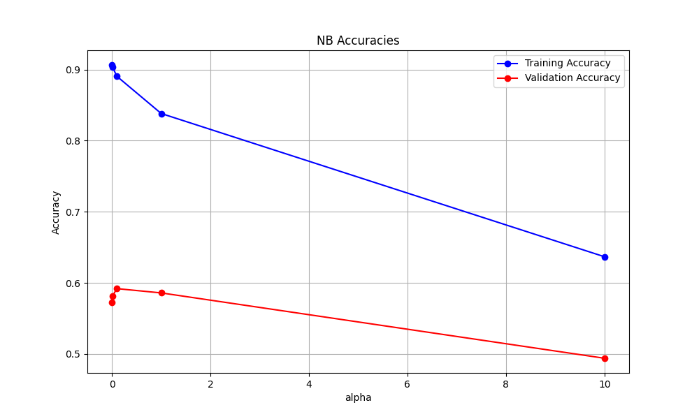
| Hyperparameter Value | Training Accuracy | Validation Accuracy | Test Accuracy |
|---|---|---|---|
| 0.100 | 0.890 | 0.592 | 0.615 |
| alpha | Training Accuracy | Validation Accuracy | Test Accuracy |
|---|---|---|---|
| 0.001 | 0.906 | 0.572 | 0.597 |
| 0.010 | 0.904 | 0.581 | 0.608 |
| 0.100 | 0.890 | 0.592 | 0.615 |
| 1.000 | 0.838 | 0.586 | 0.611 |
| 10.000 | 0.637 | 0.494 | 0.523 |
A table of hyperparameter tuning results for the NB model trained on the Bag of Words representation, with the best hyperparameters highlighted above.
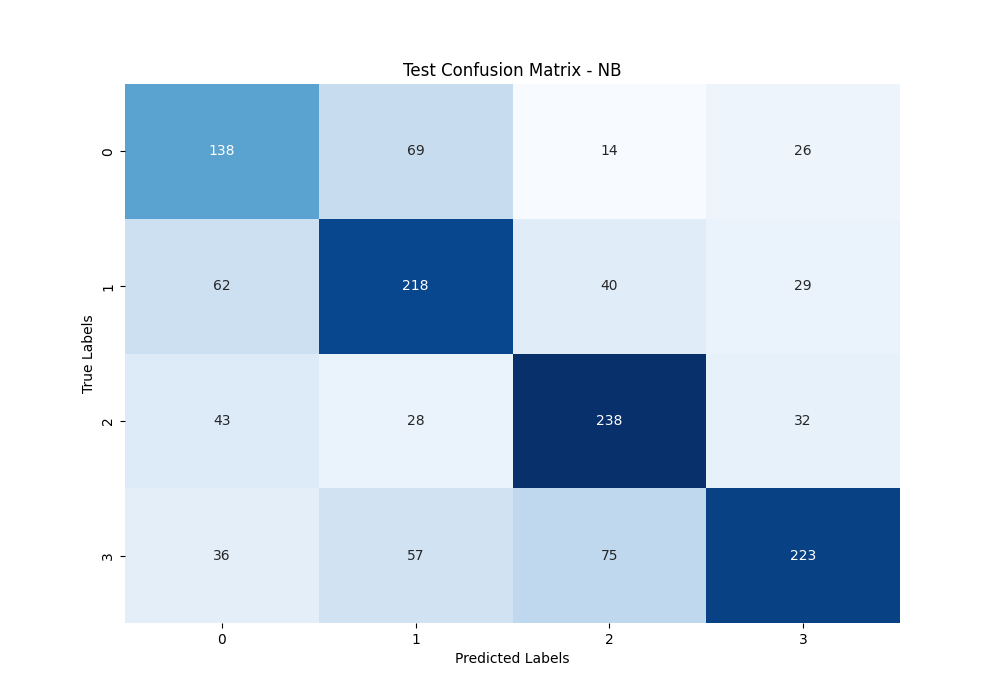
| Metric | Value |
|---|---|
| Precision | 0.624 |
| Recall | 0.615 |
| F1 Score | 0.616 |
TF-IDF
In a subsequent analysis utilising the term frequency-inverse document frequency (tf-idf) representation with various models, certain resemblances to the bag of words (bow) results were discerned. Firstly, with the feed-forward neural network, the accuracy plot bore a striking similarity to its bow counterpart. This model achieved a training accuracy of 0.99 and a validation accuracy of 0.588. The confusion matrix for test set predictions indicated that the majority of sentences were assigned their correct classes. The test set metrics recorded were: precision at 0.598, recall at 0.597, and the f1 score at 0.595.
When the support vector machines (SVM) were employed in tandem with the tf-idf representation, the accuracy plot was found to mirror that of the bow version. After tuning, the training accuracy registered at 0.968, with validation and test accuracies being 0.542 and 0.574, respectively. The precision, recall, and f1 scores for this model were 0.58, 0.574, and 0.573 in that order.
Lastly, the Naive Bayes model with the tf-idf approach displayed accuracy plots bearing a resemblance to the bow version. Post-optimisation, it yielded training, validation, and test accuracies of 0.915, 0.594, and 0.611 respectively. The precision and recall both stood at 0.611, whilst the test accuracy was slightly lower at 0.609.
Neural network
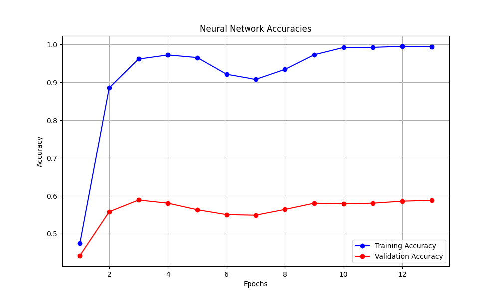
| Training Accuracy | Validation Accuracy |
|---|---|
| 0.994 | 0.588 |
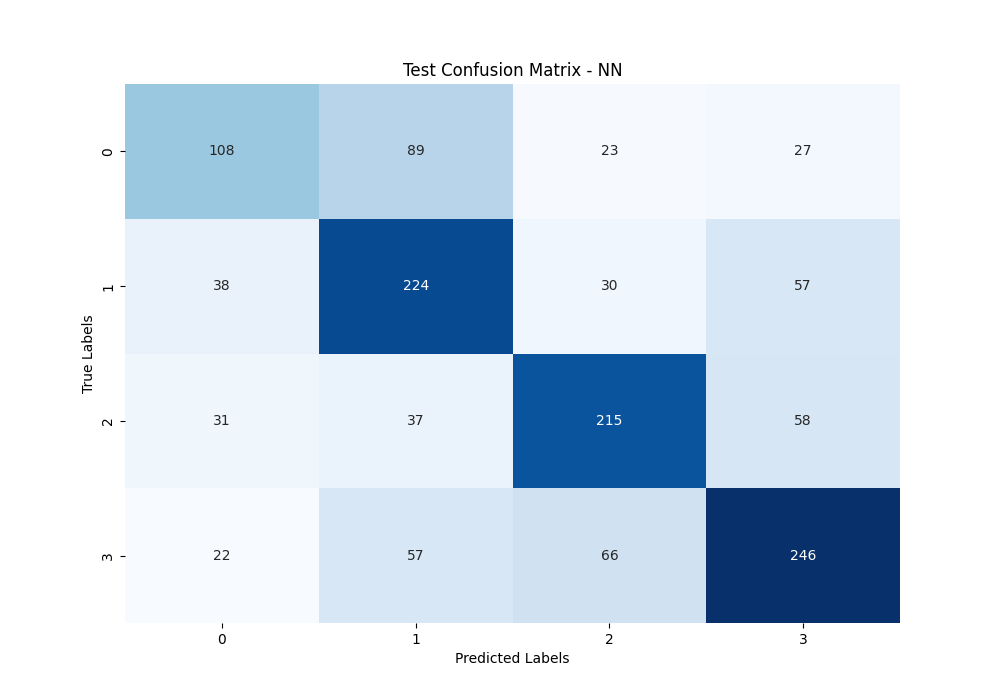
| Metric | Value |
|---|---|
| Precision | 0.598 |
| Recall | 0.597 |
| F1 Score | 0.595 |
Support Vector Machine
| Hyperparameter Value | Training Accuracy | Validation Accuracy | Test Accuracy |
|---|---|---|---|
| 1.000 | 0.968 | 0.542 | 0.574 |
| C | Training Accuracy | Validation Accuracy | Test Accuracy |
|---|---|---|---|
| 0.001 | 0.295 | 0.294 | 0.294 |
| 0.010 | 0.300 | 0.296 | 0.288 |
| 0.100 | 0.364 | 0.306 | 0.301 |
| 0.500 | 0.832 | 0.435 | 0.439 |
| 1.000 | 0.968 | 0.542 | 0.574 |
| 10.000 | 0.995 | 0.531 | 0.550 |
| 100.000 | 0.996 | 0.528 | 0.544 |
A table of hyperparameter tuning results for the SVM model trained on the TF-IDF representation, with the best hyperparameters highlighted above.
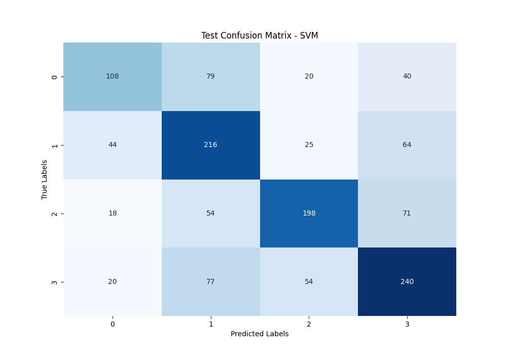
| Metric | Value |
|---|---|
| Precision | 0.58 |
| Recall | 0.574 |
| F1 Score | 0.573 |
Naive Bayes
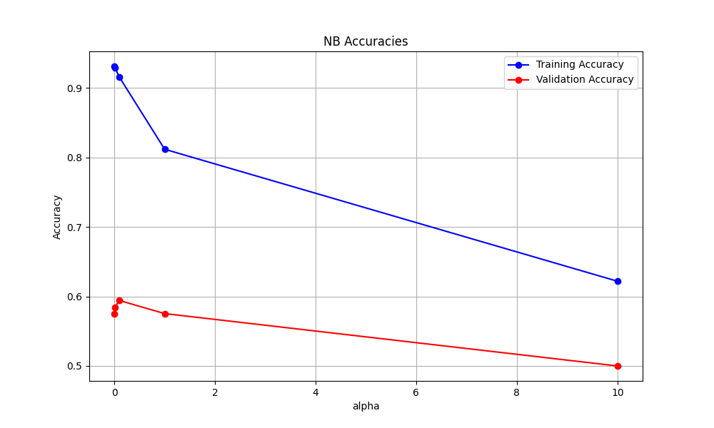
| Hyperparameter Value | Training Accuracy | Validation Accuracy | Test Accuracy |
|---|---|---|---|
| 0.100 | 0.915 | 0.594 | 0.611 |
| alpha | Training Accuracy | Validation Accuracy | Test Accuracy |
|---|---|---|---|
| 0.001 | 0.931 | 0.575 | 0.594 |
| 0.010 | 0.929 | 0.584 | 0.605 |
| 0.100 | 0.915 | 0.594 | 0.611 |
| 1.000 | 0.812 | 0.575 | 0.590 |
| 10.000 | 0.622 | 0.500 | 0.519 |
A table of hyperparameter tuning results for the NB model trained on the TF-IDF representation, with the best hyperparameters highlighted above.
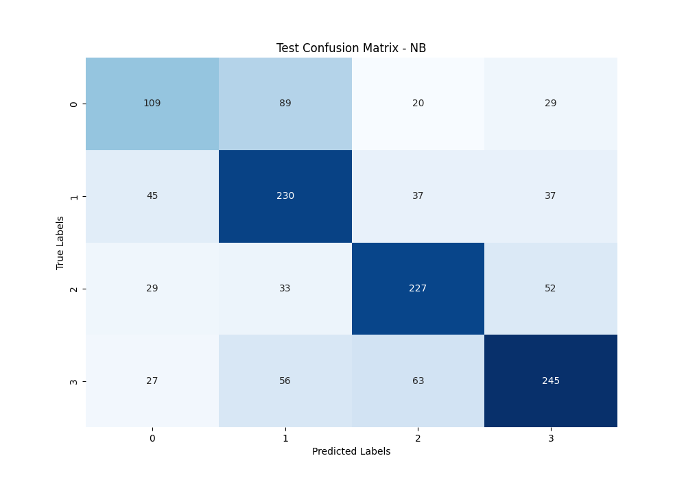
| Metric | Value |
|---|---|
| Precision | 0.611 |
| Recall | 0.611 |
| F1 Score | 0.609 |
Token Embeddings
Upon utilising text embedding as a representation technique alongside various models, a marked degradation in performance was observed compared to other preprocessing methods. With the feed-forward neural network, the training accuracy was a mere 0.409, while the validation accuracy dropped further to 0.369. The confusion matrix for test set predictions was quite telling: for a majority of sentences, the correct classes were not discerned. Intriguingly, the class “Zuma” was predominantly predicted. The test set showcased a precision of 0.367, recall of 0.368, and a notably lower f1 score of 0.328.
When paired with the support vector machines (SVM), post-tuning, the training accuracy stood at 0.406, with validation and test accuracies of 0.361 and 0.347, respectively. The precision was 0.342, the recall was 0.347, and the f1 score was slightly lower at 0.319.
Incorporating the Naive Bayes model with text embedding, post-optimisation, the training, validation, and test accuracies were 0.359, 0.359, and 0.338 in that order. This model’s precision and recall registered at 0.335 and 0.338 respectively, with the test accuracy being considerably reduced to 0.291. This underlines the challenge posed by text embeddings in this specific context, as the results were notably inferior to other data preparation methods.
Neural network
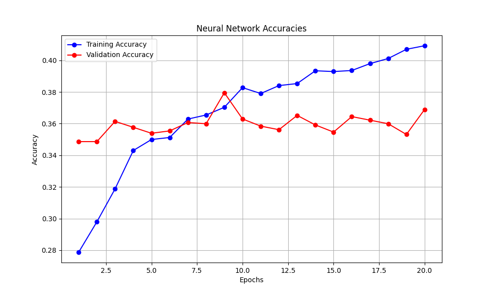
| Training Accuracy | Validation Accuracy |
|---|---|
| 0.409 | 0.369 |
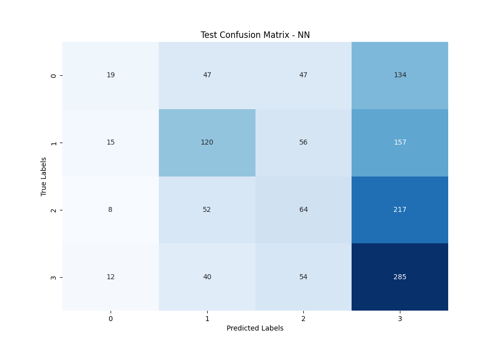
| Metric | Value |
|---|---|
| Precision | 0.367 |
| Recall | 0.368 |
| F1 Score | 0.328 |
Support Vector Machine
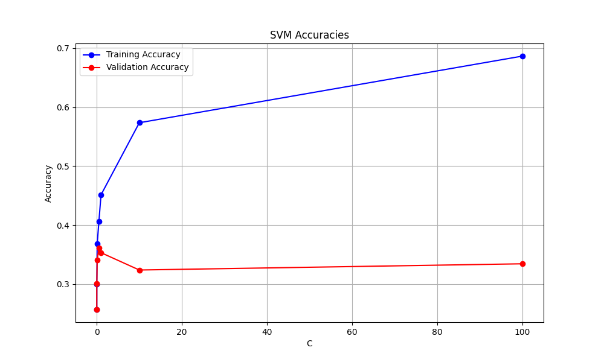
| Hyperparameter Value | Training Accuracy | Validation Accuracy | Test Accuracy |
|---|---|---|---|
| 0.500 | 0.406 | 0.361 | 0.347 |
| C | Training Accuracy | Validation Accuracy | Test Accuracy |
|---|---|---|---|
| 0.001 | 0.257 | 0.257 | 0.257 |
| 0.010 | 0.300 | 0.300 | 0.292 |
| 0.100 | 0.368 | 0.340 | 0.335 |
| 0.500 | 0.406 | 0.361 | 0.347 |
| 1.000 | 0.451 | 0.353 | 0.341 |
| 10.000 | 0.574 | 0.324 | 0.338 |
| 100.000 | 0.687 | 0.334 | 0.327 |
A table of hyperparameter tuning results for the SVM model trained on the text embedding representation, with the best hyperparameters highlighted below.
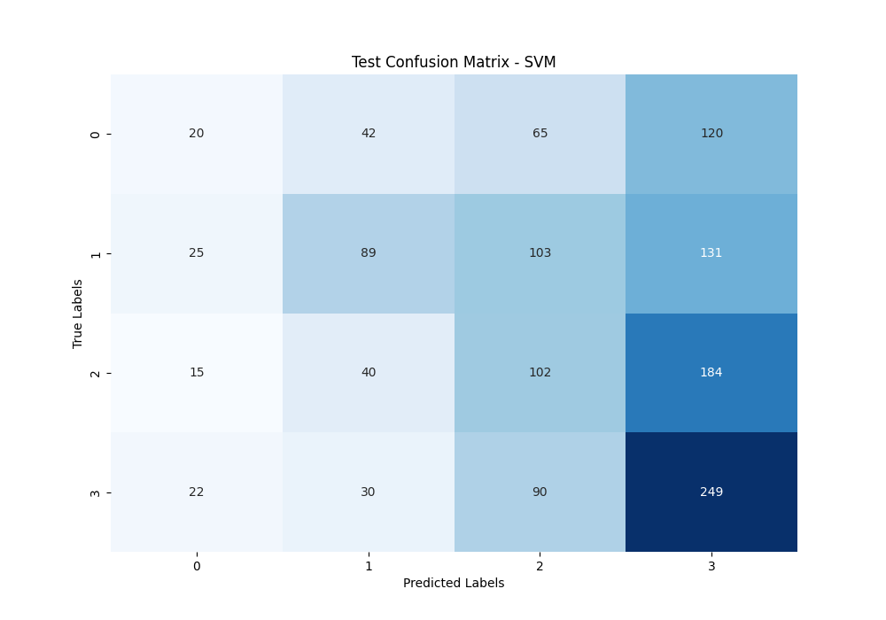
| Metric | Value |
|---|---|
| Precision | 0.342 |
| Recall | 0.347 |
| F1 Score | 0.319 |
Naive Bayes
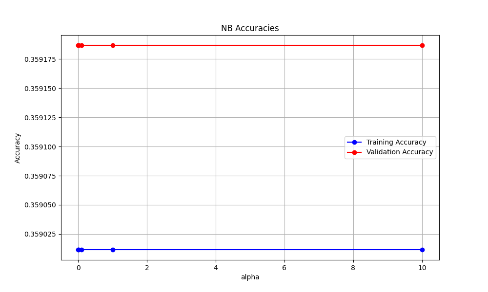
| Hyperparameter Value | Training Accuracy | Validation Accuracy | Test Accuracy |
|---|---|---|---|
| 0.001 | 0.359 | 0.359 | 0.338 |
| 0.001 | 0.359 | 0.359 | 0.338 |
| 0.001 | 0.359 | 0.359 | 0.338 |
| 0.001 | 0.359 | 0.359 | 0.338 |
| 0.001 | 0.359 | 0.359 | 0.338 |
| alpha | Training Accuracy | Validation Accuracy | Test Accuracy |
|---|---|---|---|
| 0.001 | 0.359 | 0.359 | 0.338 |
| 0.010 | 0.359 | 0.359 | 0.338 |
| 0.100 | 0.359 | 0.359 | 0.338 |
| 1.000 | 0.359 | 0.359 | 0.338 |
| 10.000 | 0.359 | 0.359 | 0.338 |
A table of hyperparameter tuning results for the NB model trained on the text embedding representation, with the best hyperparameters highlighted above.
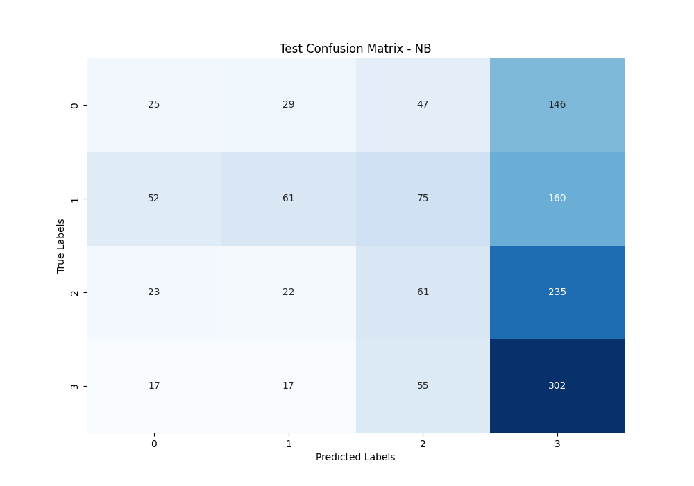
| Metric | Value |
|---|---|
| Precision | 0.335 |
| Recall | 0.338 |
| F1 Score | 0.291 |
BERT Embeddings with pre-trained classifier
The code for this section was adapted from the following source: Google Tensorflow BERT tutorial
Utilising the BERT embedding in tandem with a pre-trained model, a strategy known as transfer learning, distinctive patterns in performance were observed. Throughout the training epochs, the training accuracy showcased a consistent uptick. However, the validation accuracy plateaued rather swiftly, exhibiting minimal fluctuations thereafter. At the culmination of the training, the accuracy metrics stood as follows: training accuracy at 0.759, validation accuracy at 0.684, and a slightly higher test accuracy of 0.712. Further delving into the test set metrics, the precision was 0.71, recall was 0.707, and the f1 score was close behind at 0.708. An examination of the confusion matrix for the test set underscored these findings. The model predominantly made accurate predictions for the respective presidents, mirroring the positive metrics mentioned earlier. This highlights the efficacy of the BERT embeddings and transfer learning in this particular context, as the results were substantially more favourable than some other methods previously explored.
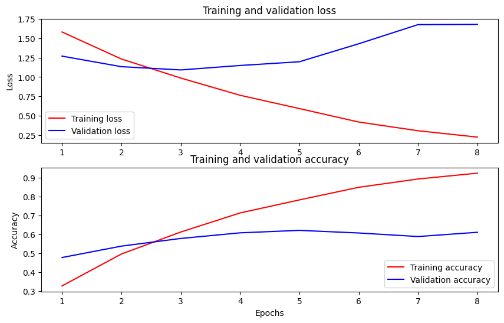
| accuracy | precision | recall | f1_score | |
|---|---|---|---|---|
| Training | 0.759 | 0.507 | 0.837 | 0.503 |
| Validation | 0.684 | 0.548 | 0.744 | 0.543 |
| Test | 0.712 | 0.710 | 0.707 | 0.708 |
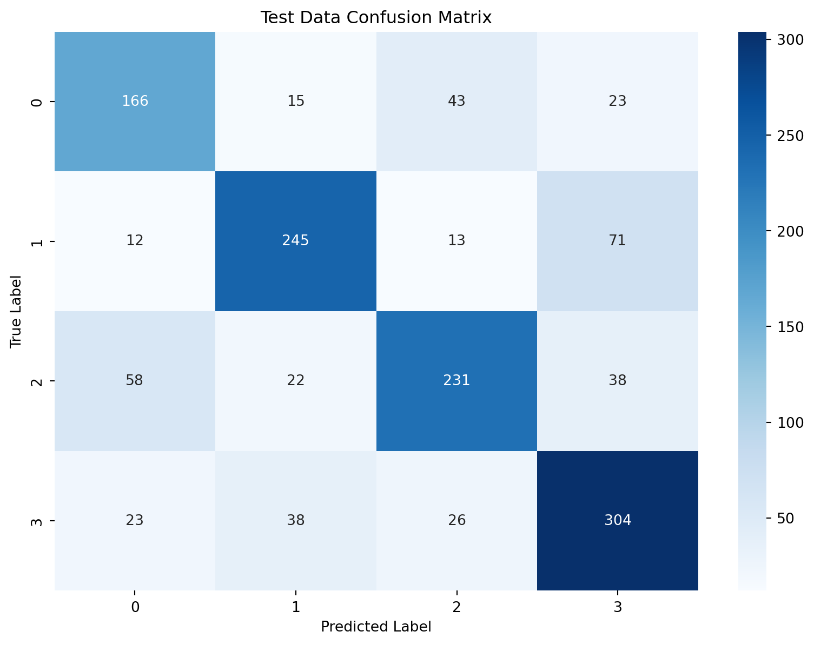